10. Recover Cleartext Document¶
Difficulty: 🎄🎄🎄🎄🎄
📜 Info & Hints¶
Recover Cleartext Document
The Elfscrow Crypto tool is a vital asset used at Elf University for encrypting SUPER SECRET documents. We can't send you the source, but we do have debug symbols that you can use.
Recover the plaintext content for this encrypted document. We know that it was encrypted on December 6, 2019, between 7pm and 9pm UTC.
What is the middle line on the cover page? (Hint: it's five words)
For hints on achieving this objective, please visit the NetWars room and talk with Holly Evergreen.
Watch> Reverse Engineering
What is the middle line on the cover page?
⚡️ Solution¶
Download the files:
Understanding the application:¶
The executable is a windows program, You will need to test it on windows machine.
Testing on Linux machine
You can use wine package to test the executable on Linux machine.
sudo apt-get install wine-stable
-
Running the executable:
.\elfscrow.exe
Welcome to ElfScrow V1.01, the only encryption trusted by Santa! * WARNING: You're reading from stdin. That only partially works, use at your own risk! ** Please pick --encrypt or --decrypt! Are you encrypting a file? Try --encrypt! For example: elfscrow.exe --encrypt <infile> <outfile> You'll be given a secret ID. Keep it safe! The only way to get the file back is to use that secret ID to decrypt it, like this: elfscrow.exe --decrypt --id=<secret_id> <infile> <outfile> You can optionally pass --insecure to use unencrypted HTTP. But if you do that, you'll be vulnerable to packet sniffers such as Wireshark that could potentially snoop on your traffic to figure out what's going on!
So we have
--insecureto use unencrypted HTTP .. interesting. -
Encryption:
Try to encrypt a test text file with the
elfscrowtool to see how it works..\elfscrow.exe --encrypt unencrypted.txt encrypted.txt.enc
-
The app created a
Seedwhich is look like a timestamp1578688947. Try to change it to human readable text and it will give your the time you run the app. -
Generated an encryption key
e8ecf939324a688ewith length of8bytes using the seed. -
Sent the key
encryption keytohttps://elfscrow.elfu.org/api/store -
Returned
a1bc0ffb-2a49-42f4-9427-575ccb17dfdbwhich is a uniqueuuidby it's format.
-
-
Decryption:
Try to decrypt the file you just encrypted to see how it works.
.\elfscrow.exe --decrypt --id=<secret_id> encrypted.txt.enc decrypted.txt
Replace
<secret_id>with id you got when encrypted the file.-
The app retrieve the key from:
https://elfscrow.elfu.org/api/retrieveusingsecret_id. -
Then decrypted the file using the key.
-
-
Monitoring the network connections:
Now try to encrypt/decrypt the file with option
--insecureto use unencrypted connection to the api, So we can monitor and analysis the traffic and verify our findings.-
Open
Wiresharkor similar apps to monitor the network traffic and start monitoring the traffic: -
Run Encryption command
.\elfscrow.exe --insecure --encrypt unencrypted.txt encrypted.txt.enc
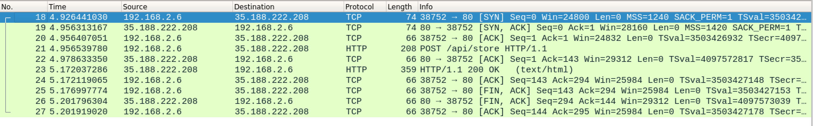
Then follow
HTTP streamto read the POST request headers and body 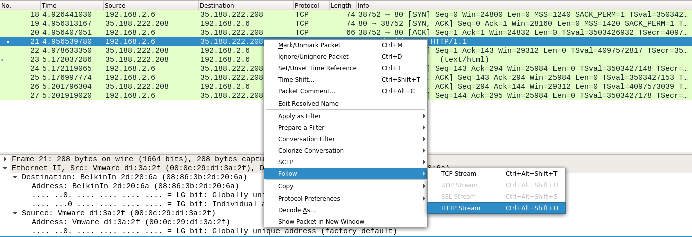The app send encryption
keyusing POST request to the api 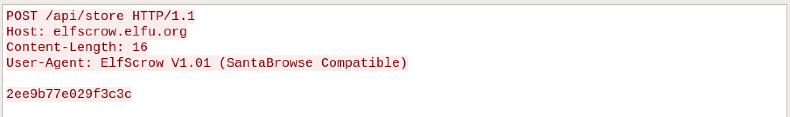The server respond with
uuid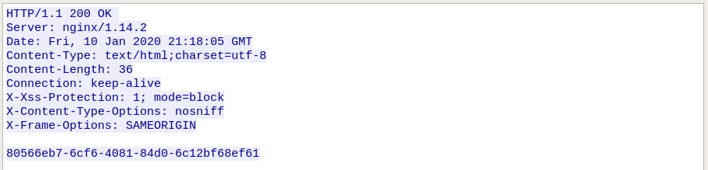 -
Run Decryption command
> Replace.\elfscrow.exe --insecure --decrypt --id=<secret_id> encrypted.txt.enc decrypted.txt
<secret_id>with id you got when encrypted the file.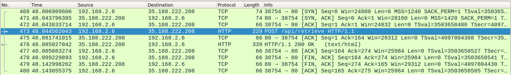
Then follow
HTTP streamto read the POST request headers and bodyThe app send
uuidusing POST request to the api 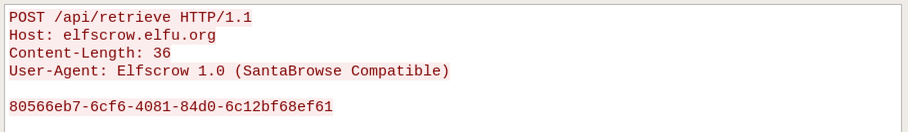The server respond with decryption
key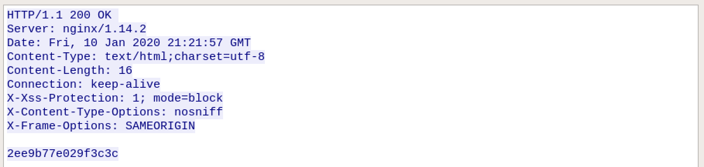 -
Let's try to send correct/wrong data to the api to check the errors:
Let's start with storing the key: send an empty POST request to the api https://elfscrow.elfu.org/api/store
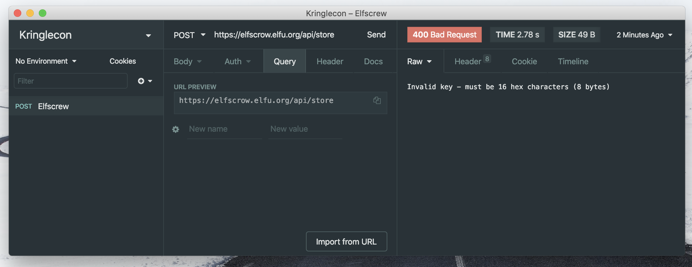
Invalid key
must be 16 hex characters (8 bytes)
If you send the correct
keyformat you get theuuid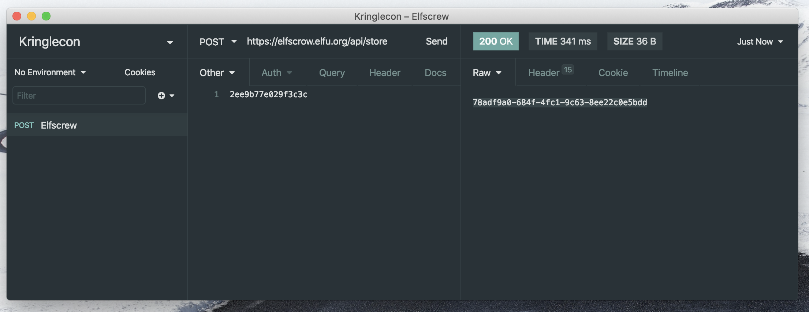Then try to retrieve the key : send an empty POST request to the api https://elfscrow.elfu.org/api/retrieve
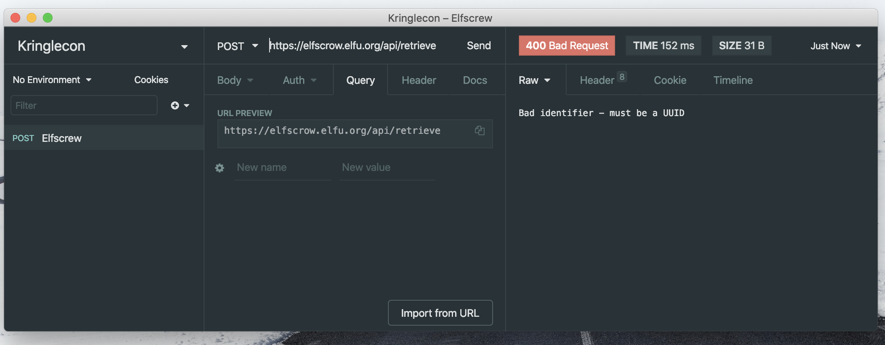
Bad identifier
must be a UUID
If you send the correct
uuidformat you get thekey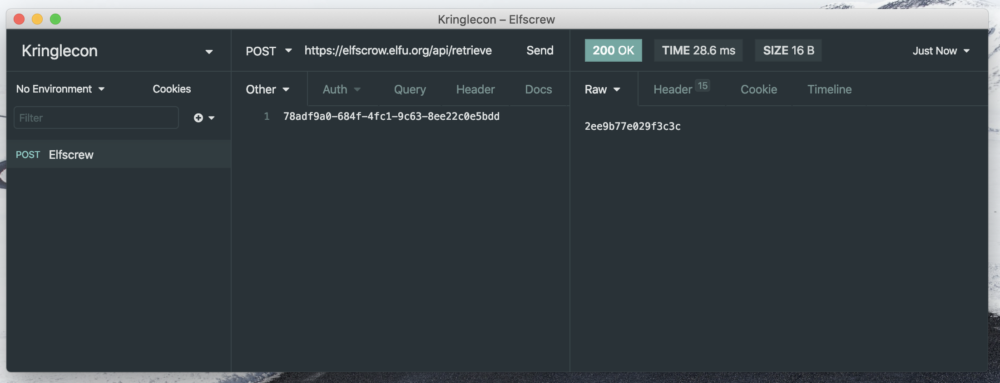
-
Debug the application:¶
In order to decrypt the file we either we have the uuid which is unique and randomly generated to get the key from the api.
or regenerate the key and decrypt the file. For this we need the following:
-
seedwhich is time based and from the hint we know the time rangeDecember 6, 2019, between 7pm and 9pm UTC. -
Key generation function.
-
Encryption function.
Let's start with looking at the program binary to find how the key is generated and the file encryption process.
8 bytes Key
A key with a fixed length - 7 or 8 bytes usually used fo DES
You will need windows machine and debugging program like Ghidra or IDA
Windows Virtual Machine
You can grab a copy on a Windows 10 a virtual machine from here.
https://developer.microsoft.com/en-us/windows/downloads/virtual-machines
-
Open the binary in IDA
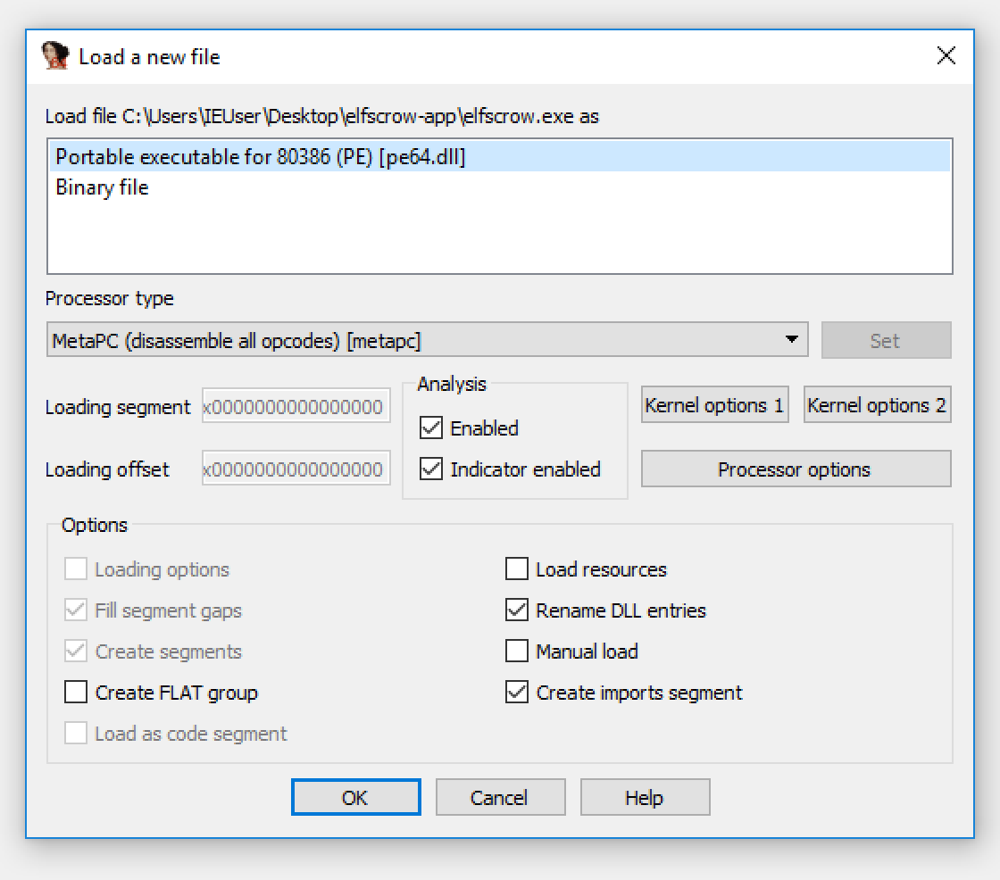
And make sure to load debug information from
.pdbfile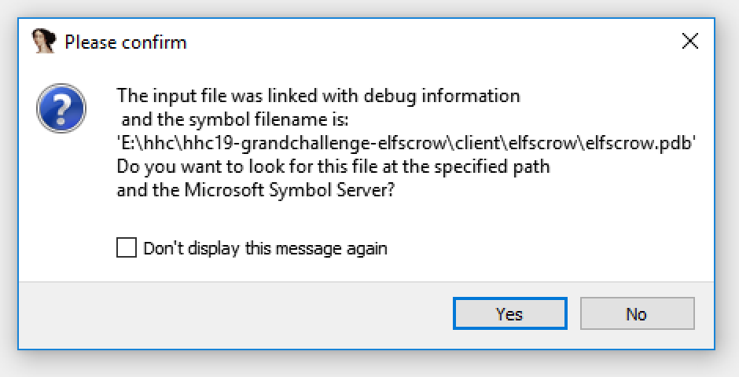
-
Select
_mainfunction from left panel and Switch to text view: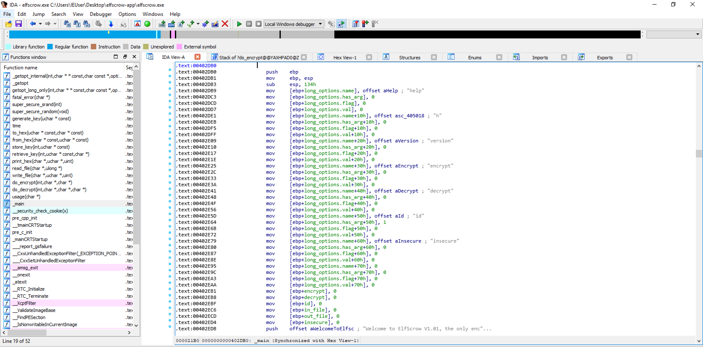
You can scroll down and start reading to find the functions and debugging information.
Also we can check functions directly from left panel, We have interesting functions:
time super_secure_srand(int) super_secure_random(void) generate_key(uchar * const) do_encrypt(int,char *,char *) do_decrypt(int,char *,char *,char *) store_key(int,uchar * const) retrieve_key(int,uchar * const,char *)
-
Let's start with
generate_keyfunction: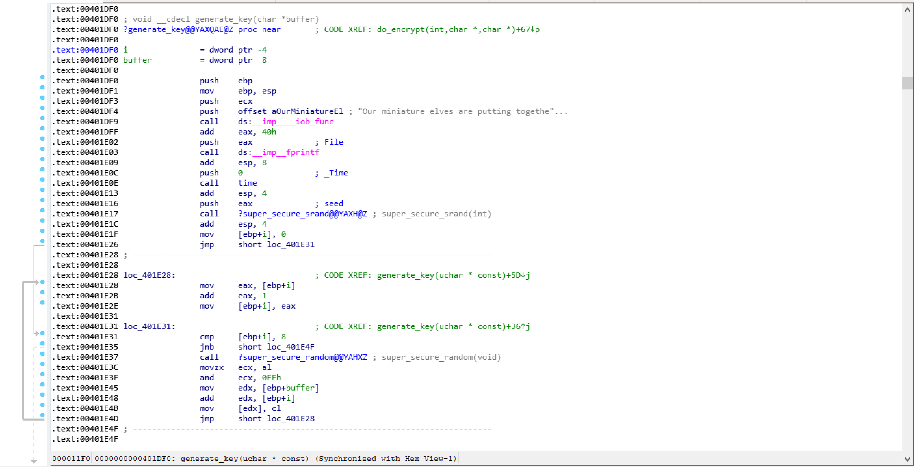
-
It calls
timeand then time returns its return value inEAXthen they useEDXas a parameterseed -
Then calls
super_secure_srand(int)function withseedas input_std -
Do 8 loops for
super_secure_random(void)with value fromsuper_secure_srandand each loop it just getting one random byte -
Return the generated key.
Immediately we see the key is based on time and is based on srand.1
-
-
Check
super_secure_srandfunction: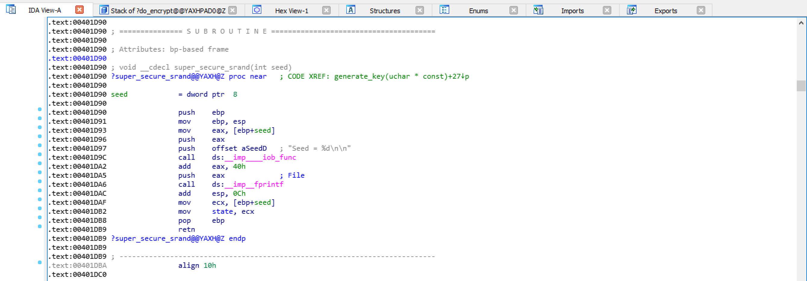
We can lookup the function by searching it's name or from the talk
void srand(int x) { seed = x; }
-
Check
super_secure_randomfunction: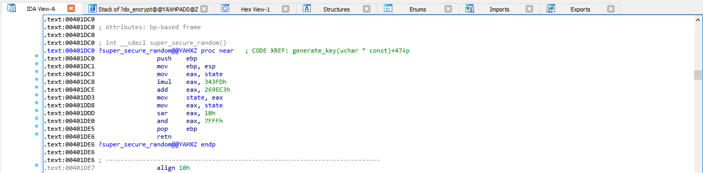
Convert the hex values to numeric: 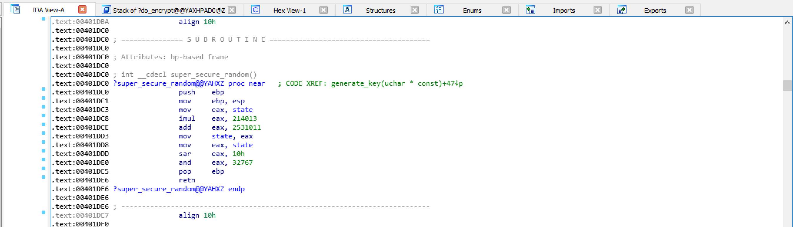
We can lookup the function by searching this values or from the talk
int rand() { return seed = (seed * 214013 + 2531011) & 32767; }
Now we can easily generate the key.
-
Check encryption function
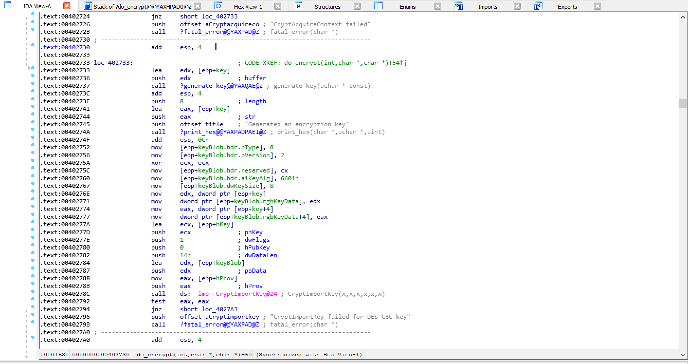
-
Get generated the key as mentioned
-
Encrypt using
DES-CBCalgorithm which confirmed by the key length. -
Send the key to the api using
store_keyfunction
-
-
Check decryption function
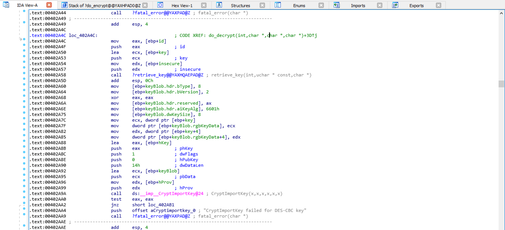
-
Retrive the key from the api using
retrieve_keyfunction -
Decrypt using
DES-CBCalgorithm which confirmed by the key length.
-
Decrypting the file¶
We will use python to:
-
Recreate the keys in the time frame
December 6, 2019, between 7pm and 9pm UTC. -
Decrypt the file.
-
Check if the file is not corrupted.
Let's begin:
-
Create our time converter to unix, set it as our
seed:from datetime import datetime # December 6, 2019, between 7pm and 9pm UTC. start_time = '2019-12-06-19-00-00-+0000' end_time = '2019-12-06-21-00-01-+0000' def totimestamp(t): t = datetime.strptime(t, '%Y-%m-%d-%H-%M-%S-%z') t = datetime.timestamp(t) return int(t) start_time = totimestamp(start_time) end_time = totimestamp(end_time) my_seed = start_time
-
Generate the key
def my_rand(seed): seed = (seed * 214013 + 2531011) & RAND_MAX_32 return seed def make_key(seed, size): key = '' for f in range(size): seed = my_rand(seed) f_seed = (seed >> 16) & 0xFF f_seed = "%02x" % f_seed key += f_seed return key
-
Decryption function
from Crypto.Cipher import DES # Decrypt def decrypt(ciphertext, key): iv = b' ' * 8 cipher = DES.new(key, DES.MODE_CBC, iv) plaintext = cipher.decrypt(ciphertext) return plaintext
We set
ivto0as it's not specified. -
Check if the file is PDF or not by searching for
pdfat the file beginning:# check if pdf def check_pdf(fin): if b'pdf' in fin[:1000]: return True
-
Decrypt and check the file is PDF then save it:
6. With the encrypted file open, Run the script and loop through timestamp range:def decrypt_file(ciphertext, key, outfile): dec = decrypt(ciphertext, key) if check_pdf(dec): with open( outfile, 'wb') as outt: outt.write(dec) print('******', outfile, ' is PDF ', '******\n'+ 'Decrypted with key', f_key, 'and key seed',my_seed,'\n' 'Creation time: ', datetime.utcfromtimestamp(my_seed) ) exit()
with open(in_file, 'rb') as inn: cipher_text = inn.read() i = 1 while my_seed < end_time: f_key = make_key(my_seed, DES_KEY_SIZE) print(i, ' |', datetime.utcfromtimestamp(my_seed) ' | Seed:', my_seed, '| Key:', f_key) my_seed += 1 i += 1 out_file = f_key + '_' + in_file[:-4] ikey = bytes.fromhex(f_key) decrypt_file(cipher_text, ikey, out_file)
So the full script will be :
The full script
from Crypto.Cipher import DES from datetime import datetime # Generate Key # December 6, 2019, between 7pm and 9pm UTC. in_file = 'ElfUResearchLabsSuperSledOMaticQuickStartGuideV1.2.pdf.enc' start_time = '2019-12-06-19-00-00-+0000' end_time = '2019-12-06-21-00-01-+0000' def totimestamp(t): t = datetime.strptime(t, '%Y-%m-%d-%H-%M-%S-%z') t = datetime.timestamp(t) return int(t) start_time = totimestamp(start_time) end_time = totimestamp(end_time) my_seed = start_time RAND_MAX_32 = 0x7fffffff DES_KEY_SIZE = 8 def my_rand(seed): seed = (seed * 214013 + 2531011) & RAND_MAX_32 return seed def make_key(seed, size): key = '' for f in range(size): seed = my_rand(seed) f_seed = (seed >> 16) & 0xFF f_seed = "%02x" % f_seed key += f_seed return key # check if pdf def check_pdf(fin): if b'pdf' in fin[:1000]: return True # Decrypt def decrypt(ciphertext, key): iv = b' ' * 8 cipher = DES.new(key, DES.MODE_CBC, iv) plaintext = cipher.decrypt(ciphertext) return plaintext def decrypt_file(ciphertext, key, outfile): dec = decrypt(ciphertext, key) if check_pdf(dec): with open(outfile, 'wb') as outt: outt.write(dec) print('******', outfile, ' is PDF ', '******\n'+ 'Decrypted with key', f_key, 'and key seed',my_seed,'\n' 'Creation time: ', datetime.utcfromtimestamp(my_seed) ) exit() with open(in_file, 'rb') as inn: cipher_text = inn.read() i = 1 while my_seed < end_time: f_key = make_key(my_seed, DES_KEY_SIZE) print(i, ' |', datetime.utcfromtimestamp(my_seed) ' | Seed:', my_seed, '| Key:', f_key) my_seed += 1 i += 1 out_file = f_key + '_' + in_file[:-4] ikey = bytes.fromhex(f_key) decrypt_file(cipher_text, ikey, out_file)
Install pycrypto python package to be used in decryption :
pip3 install pycrypto
Run the script:
Decrypted with key b5ad6a321240fbec and key seed 1575663651 Creation time: 2019-12-06 20:20:51
Open the file and get the answer:
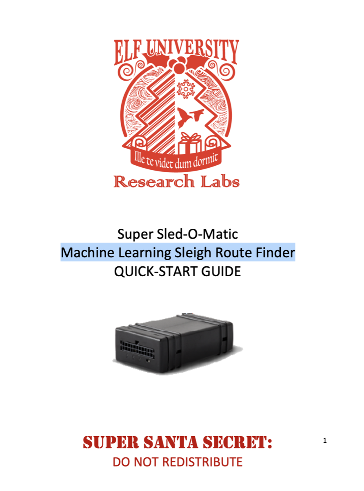
PDF reader
After decrypting the file, Some reader will not be able to open it because at the file beginning pdf not %PDF.
You can open the file in the browser and it will open normally.
or change the pdf to %PDF at the file beginning.
The Answer
Machine Learning Sleigh Route Finder
Congratulations! You have completed the Recover Cleartext Document challenge! 🎉
🎓 What you've learned¶
- Reverse Engineering a binary using IDA.
- Monitor and extract data from network connection using Wireshark.
- Testing api request/response.
srand,randfunctions.- Building decryption script for DES-CBC algorithm.